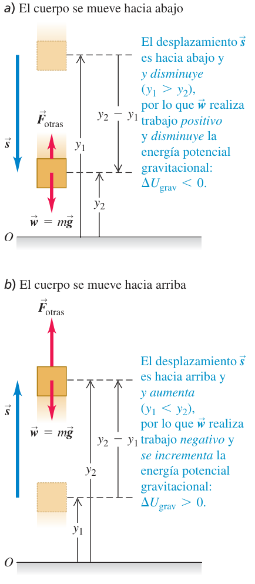
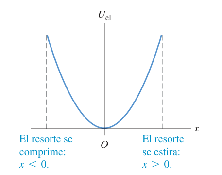
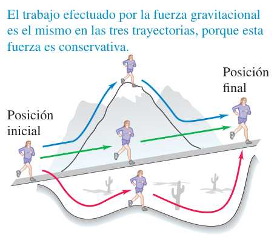
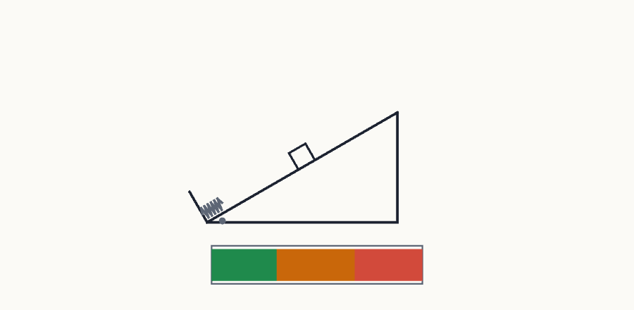
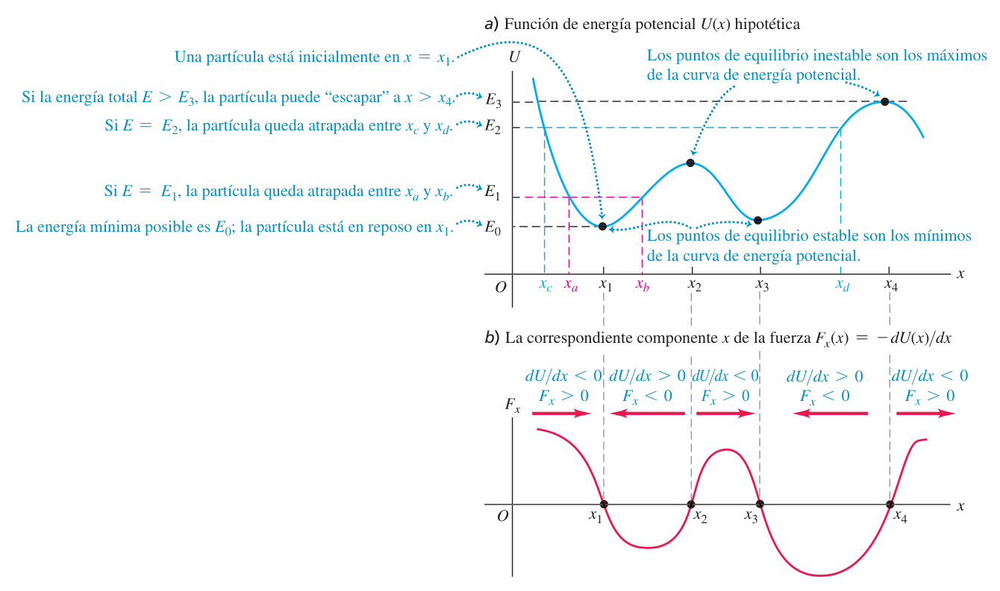
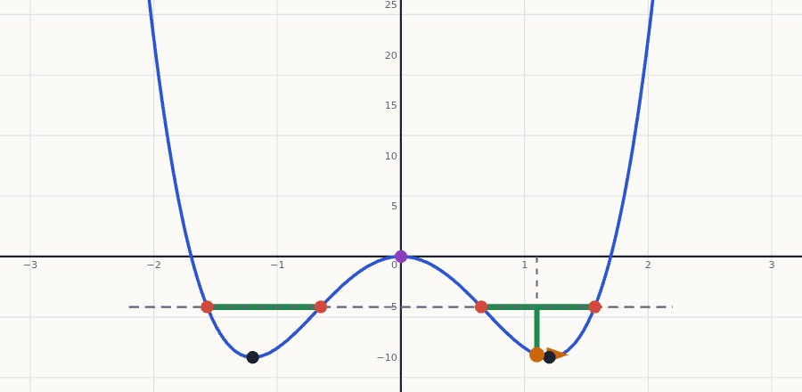

Energía potencial y conservación de la energía
En el tema 6 el trabajo se calculaba fuerza a fuerza (con una integral si la fuerza varía). Aquí aparece un atajo: si una fuerza es conservativa (el peso, el resorte), su trabajo se puede «guardar» como energía potencial y recuperar después. Con ella, la energía mecánica $K+U$ se conserva y los problemas de caídas, rampas, resortes y curvas se resuelven comparando solo el estado inicial y el final. Cuando hay fricción, lo perdido se contabiliza como trabajo de las «otras» fuerzas.
0Antes de empezar U p.204
Prerrequisitos: el teorema trabajo-energía $W_{tot}=K_2-K_1$ y el trabajo de una fuerza (tema 6, §6.1-6.3), incluido el trabajo del resorte y la ley de Hooke ($F_x=kx$ es la fuerza que haces tú sobre el resorte; la que el resorte ejerce sobre el cuerpo es $F_x=-kx$); las leyes de Newton y la fricción cinética $f_k=\mu_kn$ con la normal en un plano inclinado (temas 4 y 5); y, solo en la sección 4, la idea de derivada como pendiente de una curva (tema 2).
Mapa del tema: 7.1 define la energía potencial gravitatoria $U_{grav}=mgy$ y enuncia la conservación de la energía mecánica $K_1+U_1=K_2+U_2$, con su extensión a «otras fuerzas» ($W_{otras}$). 7.2 hace lo mismo con el resorte, $U_{el}=\tfrac12kx^2$. 7.3 separa las fuerzas conservativas de las no conservativas (fricción) y da la ley general $\Delta K+\Delta U+\Delta U_{int}=0$. 7.4 invierte el camino: de $U(x)$ se obtiene la fuerza, $F_x=-dU/dx$. 7.5 usa las gráficas de $U(x)$ (diagramas de energía) para ver dónde se mueve una partícula y dónde está en equilibrio.
El índice de exámenes asigna a este tema siete preguntas: cuatro problemas de energía con rampas, resortes y fricción (Feb 2020 2ª, Feb 2022 2ª, Sept 2024 y Sept 2023) y tres de teoría con cuestiones (Feb 2022 1ª, Feb 2024 2ª y Sept 2022). Una de ellas, y otra pregunta catalogada en el tema 13, tratan la energía potencial gravitatoria: se resuelven aquí con las mismas ideas y se marcan como relacionadas con la gravitación. Todas están resueltas abajo:
| Pregunta de examen real | Ejercicio de esta página |
|---|---|
| Feb 2020 (2ª sem.) P-1 — carril con tramo rugoso y resorte final: μ del tramo | X1 |
| Feb 2022 (2ª sem.) P-1 — bloque lanzado por un resorte en un plano de 30° con fricción (= problema 7.73 de U) | X2 |
| Sep 2024 P-1 — igual planteamiento, rampa de 25° | X3 |
| Sep 2023 P-2 — cuarto de círculo con fricción y tramo horizontal: μk y trabajo de la fricción | X4 |
| Feb 2022 (1ª sem.) P-3 Opción 3.1 — teoría «Fuerzas conservativas y no conservativas» + central hidroeléctrica y caja en rampa | X5 |
| Feb 2024 (2ª sem.) P-3 Opción A — teoría «Fuerzas conservativas y no conservativas» + cero de U del resorte y signo de U entre partículas | X6 |
| Feb 2022 (1ª sem.) P-3 Opción 3.2 — energía potencial gravitatoria: astronauta y proyectil (relacionada con la gravitación; catalogada en el tema 13) | X7 |
| Sep 2022 P-4 Opción B — «Energía potencial gravitacional»: $mgh$ frente a $-GMm/r$ y trabajo entre dos playas (relacionada con la gravitación) | X8 |
Lo que viene: la energía potencial gravitatoria general $U=-GMm/r$ y la velocidad de escape se desarrollan en el tema 13; la energía de un oscilador y de las ondas, en los temas 14 y 15.
X ×8- Elige dos estados: el 1 (donde lo conoces casi todo) y el 2 (donde está la incógnita), y dibuja las fuerzas que actúan entre ambos.
- Fija el origen de alturas ($y=0$ donde te convenga) con $+y$ hacia arriba, y que la longitud natural del resorte sea $x=0$.
- Escribe $K_1,\ U_1=U_{grav,1}+U_{el,1}$ y $K_2,\ U_2$. El peso y el resorte ya están dentro de $U$: no los cuentes otra vez.
- Calcula $W_{otras}$: el trabajo de todo lo que no sea peso ni resorte (fricción, empujes, tensiones que trabajan). La fricción da $W_f=-f_k\,s=-\mu_kn\,s$; la normal no trabaja si es perpendicular al desplazamiento.
- Plantea $K_1+U_1+W_{otras}=K_2+U_2$ (ec. 7.14) y despeja. Evalúa: ¿es $K_2\ge0$? ¿Tiene $W_{otras}$ el signo correcto (negativo si es fricción)?
En U y en el solucionario se usa $g=9{,}80\ \text{m/s}^2$. Los enunciados de examen que no la indican (Feb 2020, Feb 2022 2ª sem., Sep 2023 P-2) se resuelven aquí con 9,80; el de Sep 2024 da $g=9{,}81$. Cuando el cambio de $g$ altera el resultado, se da el valor con la otra $g$.
P1Energía potencial gravitatoria U p.204
Cuando subes un libro a una estantería, tú haces trabajo contra el peso y el libro no gana rapidez: ¿a dónde ha ido esa energía? Se ha «guardado» en la posición: el libro, en lo alto, tiene la posibilidad de volver a hacer trabajo (si cae, el peso lo acelerará). A esa energía asociada con la posición se le llama energía potencial. Piensa en una cuenta bancaria: al subir el libro «ingresas» energía en la cuenta gravitatoria; al dejarlo caer «retiras» ese dinero y lo gastas en rapidez.
Así hay dos formas de describir una caída: (1) el peso hace trabajo positivo y por eso $K$ aumenta (tema 6); (2) la energía potencial disminuye y se convierte en energía cinética. Ambas son equivalentes; la segunda es más cómoda porque no hace falta calcular el trabajo del peso.
U p.204Para un cuerpo de masa $m$ a una altura $y$ (medida hacia arriba desde el origen que elijas), cerca de la superficie terrestre: $$U_{grav}=mgy\qquad\text{(ec. 7.2)}$$ El trabajo que hace el peso al ir de $y_1$ a $y_2$ es $$W_{grav}=mgy_1-mgy_2=U_{grav,1}-U_{grav,2}=-\Delta U_{grav}\qquad\text{(ecs. 7.1 y 7.3)}$$ El signo menos es fundamental: si el cuerpo sube ($y$ aumenta), $\Delta U_{grav}>0$ y el peso hace trabajo negativo; si baja, $\Delta U_{grav}<0$ y el peso hace trabajo positivo. Unidad: el joule.
U p.204
- Elige la «altura cero» donde quieras. Si desplazas el origen cambian $y_1$, $y_2$, $U_1$ y $U_2$, pero no la diferencia $U_2-U_1=mg(y_2-y_1)$. Lo que tiene sentido físico no es el valor de $U$ en un punto, sino su diferencia entre dos puntos. Con $U=mgy$, $+y$ debe apuntar hacia arriba (si no, $U=-mgy$).
- ¿A quién pertenece $U_{grav}$? Es energía compartida del sistema cuerpo-Tierra (depende de la interacción entre ambos), no «la energía del cuerpo». Es una forma cómoda de hablar, pero no digas «el libro tiene $mgy$ julios de energía propia».
Conservación de la energía mecánica
Si la gravedad es la única fuerza que hace trabajo, el teorema trabajo-energía $W_{grav}=K_2-K_1$ y la ec. (7.3) dan $$K_1+U_{grav,1}=K_2+U_{grav,2}\qquad\text{(ec. 7.4)}$$ es decir, la energía mecánica total $E=K+U_{grav}$ es constante: lo que baja una forma, sube la otra. Al lanzar una pelota hacia arriba, $\Delta K<0$ y $\Delta U>0$; al bajar, al revés, pero la suma es la misma en todos los puntos. Vale también si actúan otras fuerzas que no hacen trabajo (como una normal perpendicular al movimiento).
U p.205-206Una pelota de béisbol de 0,145 kg sale hacia arriba a $v_1=20{,}0$ m/s. ¿Hasta qué altura sube? (Sin resistencia del aire.)
- Solo trabaja el peso, luego vale (7.4). Estado 1: la mano ($y_1=0$, $U_1=0$). Estado 2: el punto más alto ($v_2=0$, $K_2=0$).
- $K_1+0=0+U_{grav,2}\Rightarrow\tfrac12mv_1^2=mgy_2$. La masa se cancela: $y_2=\dfrac{v_1^2}{2g}=\dfrac{(20{,}0)^2}{2(9{,}80)}=20{,}4$ m.
- Comprobación de energías: $K_1=\tfrac12(0{,}145)(20{,}0)^2=29{,}0$ J y $U_{grav,2}=mgy_2=29{,}0$ J.
Si pones el origen 5,0 m más abajo, $y_1$ y $y_2$ cambian, pero la altura que sube sigue siendo 20,4 m: solo cuentan las diferencias. Es el mismo resultado de la cinemática ($v_y^2=v_{1y}^2-2g\,\Delta y$), obtenido sin ecuaciones de movimiento.
U p.206-207Dos pelotas salen de la misma altura con la misma rapidez, pero con ángulos distintos. A cualquier altura $h$ llevan la misma rapidez: tienen la misma $E$ (misma $K$ y $U$ iniciales) y la misma $U=mgh$ a esa altura, luego la misma $K$. La dirección no importa porque la energía es un escalar.
U p.209Cuando otras fuerzas hacen trabajo
Si, además del peso, actúan otras fuerzas (la mano, un motor, la fricción, la resistencia del aire…), llamamos $W_{otras}$ al trabajo de su resultante. El trabajo total es $W_{grav}+W_{otras}=K_2-K_1$ (ec. 7.5), y con $W_{grav}=U_1-U_2$: $$K_1+U_{grav,1}+W_{otras}=K_2+U_{grav,2}\qquad\text{(ecs. 7.6 y 7.7)}$$ El trabajo de todas las fuerzas distintas de la gravedad es igual al cambio de la energía mecánica total $E=K+U_{grav}$: si $W_{otras}>0$, $E$ aumenta; si $W_{otras}<0$ (fricción), $E$ disminuye. Ojo: el trabajo gravitatorio ya está dentro de $\Delta U_{grav}$, así que no lo incluyas también en $W_{otras}$.
U p.207La mano de la pelota anterior sube 0,50 m mientras la lanza (sale a 20,0 m/s). Origen en el punto de salida: $y_1=-0{,}50$ m (mano al inicio), $y_2=0$.
- $K_1=0$, $U_1=mgy_1=(0{,}145)(9{,}80)(-0{,}50)=-0{,}71$ J; $K_2=29{,}0$ J, $U_2=0$. (Que $U_1$ salga negativa no importa: cuentan las diferencias.)
- Por (7.6): $W_{otras}=(K_2-K_1)+(U_2-U_1)=29{,}0+0{,}71=29{,}7$ J. Como la fuerza de la mano $F$ es constante: $F=W_{otras}/(y_2-y_1)=29{,}7/0{,}50\approx59$ N (unas 40 veces el peso de la pelota).
- A 15,0 m sobre la salida solo trabaja el peso: $K_3=K_2+U_2-U_3=29{,}0-21{,}3=7{,}7$ J, luego $v_3=\sqrt{2K_3/m}=10$ m/s, ya suba o baje (la energía no distingue el sentido).
Trayectorias curvas
Si el cuerpo sigue una trayectoria curva, descomponemos el recorrido en tramos $\Delta\vec s=\Delta x\,\hat\imath+\Delta y\,\hat\jmath$. En cada tramo, $\vec w\cdot\Delta\vec s=(-mg\,\hat\jmath)\cdot\Delta\vec s=-mg\,\Delta y$: el movimiento horizontal no cuenta. Sumando, $W_{grav}=-mg(y_2-y_1)=U_{grav,1}-U_{grav,2}$, igual que en una caída vertical. Por eso (7.4) y (7.6) valen en rampas, columpios y montañas rusas, con solo mirar la diferencia de alturas, no la forma del camino.
U p.209Throcky (con su patineta, 25,0 kg) baja desde el reposo por un cuarto de círculo sin fricción de radio $R=3{,}00$ m. ¿Rapidez en la base y fuerza normal allí?
- La normal es siempre perpendicular al desplazamiento: no trabaja, así que $W_{otras}=0$ y vale (7.4). Origen en la base: $y_1=R$, $y_2=0$.
- $mgR=\tfrac12mv_2^2\Rightarrow v_2=\sqrt{2gR}=\sqrt{2(9{,}80)(3{,}00)}=7{,}67$ m/s, igual que en cualquier rampa de altura $R$, sea circular o no.
- Para la normal la energía no sirve: se usa Newton en el fondo, con aceleración centrípeta hacia arriba: $n-mg=m\dfrac{v_2^2}{R}=2mg\Rightarrow n=3mg=735$ N (el triple de su peso).
Lección: energía para la rapidez en un punto; segunda ley de Newton para las fuerzas en ese punto.
U p.209-210- 7.5 (círculo vertical con fricción). Si Throcky llega abajo con solo 6,00 m/s: $K_2=\tfrac12(25{,}0)(6{,}00)^2=450$ J, $U_1=mgR=735$ J. Por (7.6): $W_f=W_{otras}=K_2+U_2-K_1-U_1=450-735=-285$ J. La energía mecánica disminuyó 285 J. Aplicar Newton aquí sería difícil (la normal, la fricción y la aceleración cambian en cada punto); la energía solo mira los extremos.
- 7.6 (plano inclinado con fricción). Una caja de 12 kg sube por una rampa de 30° con $v_1=5{,}0$ m/s en la base y se detiene tras 1,6 m. $K_1=150$ J; $U_2=mgy_2=(12)(9{,}8)(0{,}80)=94$ J (con $y_2=1{,}6\sin30^\circ$). Entonces $-f s=(K_2+U_2)-(K_1+U_1)=94-150=-56$ J y $f=56/1{,}6=35$ N. Al volver a la base la fricción vuelve a quitar 56 J: $W_{otras}=-112$ J y $K_3=150-112=38$ J, es decir, $v_3\approx2{,}5$ m/s (la caja regresa con solo 38 de los 150 J iniciales).
Usa energía cuando te dan o piden rapideces y posiciones (alturas, distancias recorridas, compresiones) y no te importa el tiempo, sobre todo si la trayectoria es curva o la fuerza varía. Usa la segunda ley (o la cinemática) si te piden un tiempo o una aceleración. En los problemas mixtos se combinan: energía para $v$, Newton para fuerzas como la normal.
U p.2072Energía potencial elástica U p.212
Un resorte comprimido o estirado es como un arco tensado: has hecho trabajo para deformarlo y esa energía queda guardada, lista para devolverse como movimiento. Comprimirlo 2 cm y estirarlo 2 cm guarda lo mismo, porque la deformación aparece al cuadrado; y duplicar la deformación guarda cuatro veces más energía.
U p.212-213Para un resorte ideal (masa despreciable, fuerza $F_x=-kx$ sobre el cuerpo), con $x$ medida desde su longitud natural ($x>0$ estirado, $x<0$ comprimido): $$U_{el}=\tfrac12kx^2\qquad\text{(ec. 7.10)}$$ Nunca es negativa y vale cero con el resorte relajado. El trabajo que el resorte hace sobre el cuerpo es $$W_{el}=\tfrac12kx_1^2-\tfrac12kx_2^2=U_{el,1}-U_{el,2}=-\Delta U_{el}\qquad\text{(ec. 7.11)}$$ Si el resorte se estira más ($U_{el}$ aumenta), hace trabajo negativo; si se relaja ($U_{el}$ disminuye), hace trabajo positivo, sea cual sea el signo de $x$.
U p.212-213
0); U_el nunca es negativa." style="max-width:min(100%,300px)" loading="lazy">Con la gravedad podías poner $y=0$ donde quisieras. En (7.10), $x=0$ debe ser la longitud natural del resorte: ahí la fuerza y la energía elástica son nulas. Y no confundas $\tfrac12kx_1^2-\tfrac12kx_2^2$ con $\tfrac12k(x_1-x_2)^2$: la energía no es lineal en $x$.
U p.213Si el resorte es la única fuerza que hace trabajo: $K_1+U_{el,1}=K_2+U_{el,2}$ (ec. 7.12), es decir, $E=K+U_{el}$ es constante. En el caso más general (gravedad, resorte y otras fuerzas): $$K_1+U_{grav,1}+U_{el,1}+W_{otras}=K_2+U_{grav,2}+U_{el,2}\ \ \text{(7.13)}\qquad\Longleftrightarrow\qquad K_1+U_1+W_{otras}=K_2+U_2\ \ \text{(7.14)}$$ con $U=U_{grav}+U_{el}$. Esta es la ecuación que más se usa en examen. Se supone un resorte sin masa (si la tiene, su energía cinética es despreciable cuando su masa es mucho menor que la del cuerpo).
U p.213-214Deslizador de 0,200 kg sobre un riel de aire sin fricción, unido a un resorte de $k=5{,}00$ N/m.
- 7.7. Se estira 0,100 m y se suelta. En $x=0{,}080$ m: $K_2=U_1-U_2=\tfrac12(5{,}00)(0{,}100)^2-\tfrac12(5{,}00)(0{,}080)^2=0{,}0250-0{,}0160=0{,}0090$ J y $|v|=\sqrt{2K_2/m}=0{,}30$ m/s (el signo lo da el sentido: hacia $-x$ al volver, $v_x=-0{,}30$ m/s).
- 7.8. Parte del reposo en $x=0$ y se le aplica una fuerza constante $F=0{,}610$ N hasta $x=0{,}100$ m: $W_{otras}=F\Delta x=0{,}0610$ J. Entonces $K_2=0+0+0{,}0610-U_2=0{,}0610-0{,}0250=0{,}0360$ J y $v=0{,}60$ m/s. Sin resorte llegaría a $\sqrt{2(0{,}0610)/0{,}200}=0{,}78$ m/s: el resorte, al estirarse, hace trabajo negativo.
Un ascensor de 2000 kg (peso 19 600 N) llega con $v_1=4{,}00$ m/s a un resorte amortiguador; el freno de seguridad aplica una fricción constante de 17 000 N y el resorte lo detiene tras comprimirse 2,00 m. ¿Qué $k$ hace falta?
- Origen en el contacto ($y_1=0$) con $+y$ hacia arriba; $y_2=-2{,}00$ m. $K_1=\tfrac12(2000)(4{,}00)^2=16\,000$ J, $K_2=0$, $U_1=0$.
- $U_2=mgy_2+\tfrac12ky_2^2=-39\,200+\tfrac12k(2{,}00)^2$. La fricción trabaja en contra: $W_{otras}=-(17\,000)(2{,}00)=-34\,000$ J.
- (7.14): $16\,000-34\,000=-39\,200+2k\Rightarrow k=1{,}06\times10^4$ N/m.
Parece una paradoja: $\tfrac12ky_2^2=21\,200$ J es mayor que la energía mecánica inicial (16 000 J), pero el punto 2 está por debajo del origen, donde $U_{grav}$ es negativa ($-39\,200$ J): la energía mecánica en 2 vale $E_2=21\,200-39\,200=-18\,000$ J, que es 16 000 − 34 000. Más adelante (ejercicio E 7.22 de abajo) se calcula su rapidez y aceleración a 1,00 m.
U p.216-2173Fuerzas conservativas y no conservativas U p.217
Con el peso y el resorte, la energía cinética que «prestas» a la energía potencial se recupera íntegra: la pelota lanzada hacia arriba vuelve a su altura con la misma rapidez; el deslizador rebota en el resorte con la rapidez con que llegó. Es una conversión bidireccional, como un depósito del que puedes retirar todo lo ingresado. La fricción, en cambio, es una «comisión» que no se devuelve: al frenar con el coche bloqueado, la energía cinética perdida calienta neumáticos y asfalto y no puedes recuperarla dando marcha atrás.
U p.217-218Es una fuerza para la cual la relación trabajo-energía cinética es totalmente reversible. El trabajo de una fuerza conservativa tiene cuatro propiedades:
- puede expresarse como diferencia entre los valores inicial y final de una función de energía potencial: $W=U_1-U_2=-\Delta U$;
- es reversible;
- es independiente de la trayectoria: solo depende de los puntos inicial y final;
- si el punto final coincide con el inicial (trayectoria cerrada), el trabajo total es cero.
Ejemplos: el peso ($U=mgy$), la fuerza elástica ideal ($U=\tfrac12kx^2$) y, más adelante, la fuerza eléctrica. Si solo trabajan fuerzas conservativas, $E=K+U$ es constante.
U p.217-218
No todas las fuerzas son conservativas. La fricción cinética no lo es: al invertir el movimiento también se invierte la fuerza, así que trabaja negativo en ambos sentidos, y en un viaje de ida y vuelta su trabajo no se anula. La resistencia de un fluido tampoco. El trabajo de una fuerza no conservativa no puede representarse con una función de energía potencial y depende del camino. Si hace que la energía mecánica se pierda (fricción, resistencia del aire) se llama fuerza disipativa; también hay fuerzas no conservativas que aumentan la energía mecánica (la explosión de un petardo).
U p.218Mueves 2,50 m un sillón de 40,0 kg sobre un suelo horizontal con $\mu_k=0{,}200$. El camino recto está bloqueado, así que usas uno de dos tramos de 2,00 m y 1,50 m. ¿Cuánto trabajo extra?
- El sillón parte y termina en reposo y no cambia de altura: $K_1=K_2$, $U_1=U_2$, así que $W_{otras}=0$: lo que tú aportas compensa lo que quita la fricción, $W_{usted}=-W_{fric}=\mu_kmg\,s$.
- Camino recto ($s=2{,}50$ m): $W_{usted}=(0{,}200)(40{,}0)(9{,}80)(2{,}50)=196$ J.
- Camino de dos tramos ($s=2{,}00+1{,}50=3{,}50$ m): $W_{usted}=274$ J. Trabajo extra: $274-196=78$ J.
Mismos puntos inicial y final, distinto trabajo de fricción ($-196$ J frente a $-274$ J): es no conservativa.
U p.218-219Una fuerza $\vec F=Cx\,\hat\jmath$ ($C>0$) actúa sobre un electrón que da una vuelta a una espira cuadrada de lado $L$ (el eje $x$ horizontal). Solo trabaja en el tramo vertical de $x=L$: $W=\int_0^L CL\,dy=CL^2\neq0$. Como el trabajo en una trayectoria cerrada no es cero, la fuerza no es conservativa y no se puede escribir con una $U$. Esa es la prueba rápida: ¿sale cero al volver al punto de partida?
U p.219Los efectos de las fuerzas no conservativas se describen con otra forma de energía, la energía interna (el calentamiento del bloque y de la superficie). Experimentalmente, su aumento es exactamente el valor absoluto del trabajo de la fricción: $\Delta U_{int}=-W_{otras}$. Sustituyendo en (7.14): $$\Delta K+\Delta U+\Delta U_{int}=0\qquad\text{(ec. 7.15)}$$ La suma de todos los cambios de energía es cero: una forma disminuye y otra aumenta, la energía nunca se crea ni se destruye, solo cambia de forma. La energía mecánica sí puede perderse; la energía total no.
U p.220Vuelve al ejemplo 7.5 (Throcky baja la rampa con fricción). Su energía cinética pasa de 0 a 450 J ($\Delta K=+450$ J) y la potencial de 735 J a 0 ($\Delta U=-735$ J). El trabajo de la fricción es $W_{otras}=W_{fric}=-285$ J, así que el cambio de energía interna es $\Delta U_{int}=-W_{otras}=+285$ J: se calientan un poco las ruedas, los cojinetes de la patineta y la rampa. Según (7.15): $$\Delta K+\Delta U+\Delta U_{int}=+450\ \text{J}+(-735\ \text{J})+285\ \text{J}=0$$ La energía total del sistema se conserva (incluidas las formas de energía interna).
U p.220
- Decir «la energía no se conserva» cuando hay fricción: se conserva la energía total; lo que baja es la energía mecánica $K+U$, que se convierte en energía interna.
- Querer escribir una energía potencial de la fricción: no existe, porque su trabajo depende del camino. Se cuenta como $W_{otras}=-f_ks$ (con $s$ la longitud recorrida, no el desplazamiento neto).
- Aplicar $K_1+U_1=K_2+U_2$ (sin $W_{otras}$) cuando hay fricción o una fuerza que trabaja.
- Contar dos veces el trabajo del peso o del resorte: una vez en $U$ y otra en $W_{otras}$.
4Fuerza y energía potencial U p.221
Imagina $U(x)$ como el perfil de una montaña. Una canica suelta sobre ella rueda cuesta abajo, hacia donde $U$ disminuye, y empuja con más fuerza donde la pendiente es mayor. En el fondo de un valle, en la cima y en un tramo plano, la pendiente es cero y no hay fuerza. Eso es todo el resultado de esta sección: la fuerza es la pendiente de $U$ con signo cambiado.
U p.221Para una fuerza conservativa se cumple $W=-\Delta U$. En un desplazamiento pequeño $\Delta x$, $F_x\Delta x\approx-\Delta U$, y al tomar el límite $\Delta x\to0$: $$F_x(x)=-\frac{dU(x)}{dx}\qquad\text{(ec. 7.16)}$$ La componente de la fuerza es el negativo de la derivada de $U$. Donde $U$ cambia rápido, $F$ es grande; si $F_x>0$, $U$ disminuye al aumentar $x$.
U p.221- Gravedad: $U=mgy\Rightarrow F_y=-\dfrac{d(mgy)}{dy}=-mg$: la fuerza apunta hacia $y$ decreciente.
- Resorte: $U=\tfrac12kx^2\Rightarrow F_x=-kx$: para $x>0$ la pendiente es positiva y $F_x<0$ (hacia $x=0$); para $x<0$, la pendiente es negativa y $F_x>0$ (otra vez hacia $x=0$). Es una fuerza restauradora.
Con $U(x,y,z)$, cada componente es el negativo de la derivada parcial (se deriva respecto a esa coordenada y las otras se tratan como constantes): $$F_x=-\frac{\partial U}{\partial x},\quad F_y=-\frac{\partial U}{\partial y},\quad F_z=-\frac{\partial U}{\partial z}\qquad\text{(7.17)}$$ $$\vec F=-\left(\frac{\partial U}{\partial x}\hat\imath+\frac{\partial U}{\partial y}\hat\jmath+\frac{\partial U}{\partial z}\hat k\right)=-\vec\nabla U\qquad\text{(7.18)}$$ Es el gradiente de $U$. Con $U=mgy$ da $\vec F=-mg\,\hat\jmath$. Una montaña muy empinada (gradiente grande) empuja con fuerza intensa; la superficie plana de un lago ($U$ constante) no ejerce fuerza.
U p.223- 7.13 (fuerza eléctrica). Una carga fija en $x=0$ repele a otra igual que se mueve por $+x$; $U(x)=C/x$ con $C>0$. Entonces $F_x=-\dfrac{d}{dx}\dfrac Cx=\dfrac{C}{x^2}>0$: repulsión, grande cuando están muy juntas y cada vez menor al alejarse.
- 7.14 (disco en dos dimensiones). $U(x,y)=\tfrac12k(x^2+y^2)$. Las derivadas parciales dan $\vec F=-k(x\,\hat\imath+y\,\hat\jmath)=-k\vec r$, de módulo $F=k\sqrt{x^2+y^2}=kr$ y dirigida hacia el origen: justo la fuerza de un resorte ideal de longitud natural despreciable fijo en $r=0$.
La dirección de la fuerza la determina el signo de $F_x=-dU/dx$, no el signo de $U$. Lo físicamente significativo es la diferencia de $U$ entre dos puntos, que es lo que mide la derivada. Por eso puedes sumar cualquier constante a $U$ sin cambiar la física, y por eso desplazar la variable (usar $\tfrac12k(x-x_1)^2$ en vez de sumar una constante) sí la cambia (ver X6).
U p.2255Diagramas de energía U p.224
Dibuja $U(x)$ y, encima, una línea horizontal a la altura de la energía total $E$, como el nivel del agua en un paisaje. La partícula solo puede estar donde la curva queda por debajo del agua: la distancia vertical entre la línea $E$ y la curva es la energía cinética $K=E-U$. Donde la curva toca la línea, $K=0$: la partícula se para y da media vuelta. Una canica en un cuenco no puede subir por encima del nivel de donde se soltó.
U p.224-225Una gráfica que muestra a la vez $U(x)$ y la energía total $E$ es un diagrama de energía. Como $K=E-U\ge0$, la partícula solo puede estar donde $U(x)\le E$ y $U$ nunca supera a $E$. Los puntos donde $U=E$ (y por tanto $K=0$) son los puntos de retorno: ahí la partícula se detiene e invierte su movimiento. Una región entre dos puntos de retorno es un pozo de potencial. Ejemplo del libro: el deslizador con resorte oscila entre $x=-A$ y $x=+A$, con $K$ máxima en $x=0$ y nula en los extremos.
U p.224-225Un punto de equilibrio es donde $F_x=-dU/dx=0$ (pendiente nula). Los mínimos de $U(x)$ son equilibrios estables (si te apartas, la fuerza te devuelve: fuerza restauradora); los máximos son equilibrios inestables (si te apartas, la fuerza te aleja). Si $E$ es solo un poco mayor que el mínimo, la partícula queda atrapada cerca del fondo; si $E$ supera el valor máximo de $U$ en un lado, puede «escapar» hacia $x$ muy grande.
U p.225

- Traza (o localiza) la línea horizontal $E$ y marca dónde corta a $U(x)$: son los puntos de retorno; la partícula vive en los tramos donde $U\lt E$.
- Si la línea $E$ pasa por encima de un máximo y la curva vuelve a bajar fuera, la partícula puede escapar por ese lado; si no, está atrapada.
- $K$ es la distancia vertical entre $E$ y $U$: máxima en el fondo del pozo, cero en los puntos de retorno.
- El sentido de la fuerza en cada punto es el de la bajada de $U$; es cero en mínimos y máximos.
6Ejercicios resueltos
Primero las preguntas de examen real: los cuatro problemas (de más sencillos a más elaborados), después la teoría y las cuestiones; luego ocho ejercicios del solucionario (E), de sencillos a elaborados. Cada uno termina con una receta y, si procede, el error típico. Intenta resolver tú antes de abrir la solución. Todos usan la receta maestra de la sección 0.
X1 — Carril con tramo rugoso y resorte final: coeficiente de rozamiento X
Sea un bloque de 5 kg de masa que se deja deslizar, partiendo del reposo, desde el punto A de un carril a una altura $h=4$ m según la figura. El carril consta de tres tramos de los cuales sólo existe rozamiento en el tramo BC de 5 m de longitud. Al final del trayecto, en el tramo CD se encuentra un resorte cuya constante elástica es $k=400$ N/m. Cuando el bloque alcance el punto D, el resorte se ha comprimido 25 cm. Suponiendo que el choque entre la masa y el resorte es perfectamente elástico, calcular el coeficiente de rozamiento dinámico en el tramo BC. (3 puntos.)
- Cómo leer el enunciado. «El resorte se ha comprimido 25 cm cuando el bloque alcanza D» significa que D es el punto de compresión máxima: allí el bloque se detiene un instante, $v_D=0$. «Choque perfectamente elástico» quiere decir que al tocar el resorte no se pierde energía mecánica: toda la cinética se almacena como $\tfrac12kx^2$. No se da $g$: se usa 9,8 m/s².
- Estados y origen. Estado 1 = A (reposo, $y_A=h=4$ m); estado 2 = D (reposo, $y_D=0$, resorte comprimido $x=0{,}25$ m). Origen de alturas en el tramo horizontal.
- Energías. $K_1=0$, $U_1=mgh$; $K_2=0$, $U_2=\tfrac12kx^2$ ($U_{grav,2}=0$).
- Otras fuerzas. Solo hay fricción en BC (la normal no trabaja en ningún tramo). En el tramo horizontal $n=mg$, así que $f_k=\mu mg$ y $W_{otras}=-\mu mg\,L$ con $L=5$ m. En AB y CD no hay fricción.
- Balance (7.14): $mgh-\mu mgL=\tfrac12kx^2\ \Rightarrow\ \mu=\dfrac{mgh-\tfrac12kx^2}{mgL}=\dfrac hL-\dfrac{kx^2}{2mgL}$.
- Números: $mgh=5\cdot9{,}8\cdot4=196$ J; $\tfrac12kx^2=\tfrac12\cdot400\cdot0{,}25^2=12{,}5$ J; $mgL=5\cdot9{,}8\cdot5=245$ J. $\mu=\dfrac{196-12{,}5}{245}=\dfrac{183{,}5}{245}=0{,}749$.
- Comprobación. Con $g=9{,}81$ sale lo mismo ($0{,}749$) porque el término dominante $h/L=0{,}8$ no depende de $g$. El valor es alto pero posible: casi toda la energía (183,5 de 196 J) se disipa en BC.
Resultado: $\mu\approx0{,}75$.
X2 — Bloque lanzado por un resorte en un plano inclinado de 30° con fricción X
Un bloque sólido de 1,50 kg de masa se coloca contra un resorte comprimido en la base de un plano inclinado de pendiente 30° (punto A). Al soltarse el resorte, el bloque sube por el plano. En el punto B, a 6,0 m pendiente arriba de A, el bloque tiene una velocidad de 7 m/s dirigida pendiente arriba y ya no está en contacto con el resorte. El coeficiente de fricción cinética entre el bloque y la superficie del plano es $\mu_k=0{,}50$. La masa del resorte es despreciable. Calcule la energía potencial almacenada inicialmente en el resorte. (3 puntos.) = E 7.73
- Estados. 1 = A (reposo contra el resorte comprimido): $K_A=0$, $U_A=U_{el,A}$ (la incógnita), $y_A=0$. 2 = B: $v_B=7$ m/s, resorte ya relajado y sin contacto, $y_B=s\sin30^\circ=6{,}0\cdot0{,}5=3{,}0$ m.
- ¿Por qué no hace falta saber cuánto se comprimió ni su $k$? Porque la fuerza del resorte es conservativa: todo su trabajo está contenido en $U_{el,A}$ (§7.2). Solo importa la energía total almacenada.
- Fricción. Perpendicular al plano no hay aceleración: $n=mg\cos30^\circ$ y $f_k=\mu_kmg\cos30^\circ$ (no $\mu_kmg$). Actúa durante los 6,0 m completos (también mientras el resorte empuja): $W_{otras}=-\mu_kmg\cos30^\circ\,s$.
- Balance (7.14): $U_{el,A}+W_{otras}=K_B+U_{grav,B}\ \Rightarrow\ U_{el,A}=\tfrac12mv_B^2+mgs\sin\theta+\mu_kmg\cos\theta\,s$.
- Números ($g=9{,}8$): $K_B=\tfrac12(1{,}50)(7)^2=36{,}75$ J; $U_{grav,B}=(1{,}50)(9{,}8)(3{,}0)=44{,}10$ J; $|W_f|=(0{,}50)(1{,}50)(9{,}8)(0{,}866)(6{,}0)=38{,}19$ J. Suma: $U_{el,A}=36{,}75+44{,}10+38{,}19=119{,}04$ J.
- Lectura física. La energía del resorte se reparte en tres «cuentas»: cinética en B (31 %), potencial gravitatoria (37 %) y energía interna por fricción (32 %).
Resultado: $U_{el,A}\approx119$ J (con $g=9{,}81$: 119,1 J).
X3 — Mismo planteamiento con rampa de 25° (g = 9,81) X
Un bloque de 1,5 kg de masa se coloca contra un muelle que se encuentra comprimido en la base de una rampa de 25°. Al liberar el muelle, el bloque sube por la pendiente por la acción de éste de forma que cuando lleva recorridos 5 m el módulo de su velocidad es de 6 m/s. En ese momento el bloque ya no está en contacto con el muelle. El coeficiente de fricción cinética entre el bloque y la pendiente es de $\mu_k=0{,}4$. Considere además que la masa del muelle es despreciable. Obtenga el valor de la energía potencial almacenada inicialmente en el muelle. Considere: $g=9{,}81\ \text{m/s}^2$. (3 puntos.)
- Estados. 1 = base de la rampa (reposo, muelle comprimido, $y_1=0$). 2 = tras recorrer $s=5$ m: $v_2=6$ m/s, $y_2=s\sin25^\circ$.
- Fuerzas. Peso y muelle van en $U$; la normal ($n=mg\cos25^\circ$) no trabaja; la fricción $f_k=\mu_kmg\cos25^\circ$ es la única «otra» fuerza y actúa a lo largo de los 5 m desde la posición inicial.
- Balance (7.14): $U_{el,1}-\mu_kmg\cos\theta\,s=\tfrac12mv_2^2+mgs\sin\theta$.
- Números: $\tfrac12mv_2^2=\tfrac12(1{,}5)(36)=27{,}00$ J; $mgs\sin25^\circ=(1{,}5)(9{,}81)(5)(0{,}4226)=31{,}09$ J; $\mu_kmg\cos25^\circ\,s=(0{,}4)(1{,}5)(9{,}81)(0{,}9063)(5)=26{,}67$ J.
- $U_{el,1}=27{,}00+31{,}09+26{,}67=84{,}77$ J.
Resultado: $U_{el}\approx84{,}8$ J.
X4 — Cuarto de círculo con fricción y tramo horizontal: μk y trabajo de la fricción X
Una partícula de masa 0,5 kg que se encuentra en reposo se suelta desde una posición A, que forma un cuarto de círculo de radio $R=2{,}1$ m según se muestra en la figura, deslizándose hasta llegar al punto B con una velocidad de 5,2 m/s. A partir de este punto, la partícula se desplaza sobre una superficie horizontal hasta el punto C situado a 5 m, donde se detiene. Calcular (a) el coeficiente de fricción cinética de la superficie horizontal y (b) el trabajo de la fuerza de rozamiento sobre la partícula al deslizarse desde el punto A al B. (3 puntos.)
- Método. En el tramo curvo la normal y la fricción cambian punto a punto: Newton sería muy difícil. Con energía solo necesitamos los extremos de cada tramo (Estrategia 7.1). Se usa B como «bisagra» entre los dos tramos. No se da $g$: se usa 9,80 (con 9,81 los resultados apenas cambian).
- (a) Tramo BC. Estado 1 = B ($v_B=5{,}2$ m/s), estado 2 = C ($v_C=0$), mismo nivel ($U_1=U_2$). Sobre la superficie horizontal $n=mg$, luego $f_k=\mu_kmg$ y $W_{otras}=-\mu_kmg\,s$.
- Balance $K_B+W_{otras}=K_C$: $\tfrac12mv_B^2-\mu_kmgs=0\Rightarrow\mu_k=\dfrac{v_B^2}{2gs}=\dfrac{(5{,}2)^2}{2(9{,}8)(5)}=\dfrac{27{,}04}{98}=0{,}276$. La masa se cancela.
- (b) Tramo AB. Origen en B: $y_A=R=2{,}1$ m, $y_B=0$; $K_A=0$. La normal no trabaja (es perpendicular a la trayectoria en cada punto); la única «otra» fuerza es la fricción: $W_{otras}=W_f^{AB}$.
- (7.14): $0+mgR+W_f^{AB}=\tfrac12mv_B^2+0\Rightarrow W_f^{AB}=\tfrac12mv_B^2-mgR=6{,}76-10{,}29=-3{,}53$ J (con $g=9{,}81$: $-3{,}54$ J). $\tfrac12mv_B^2=\tfrac12(0{,}5)(27{,}04)=6{,}76$ J y $mgR=(0{,}5)(9{,}8)(2{,}1)=10{,}29$ J.
- Comprobación de sentido. Sin fricción llegaría a B con $\sqrt{2gR}=6{,}42$ m/s $>5{,}2$ m/s: coherente con que la fricción haya quitado energía. Y en BC la fricción retira los 6,76 J que tenía en B.
Resultado: (a) $\mu_k\approx0{,}28$; (b) $W_f^{AB}\approx-3{,}5$ J.
X5 — Teoría: «Fuerzas conservativas y no conservativas» (+ hidroeléctrica y caja en rampa) X
Desarrolle el tema 3.1: Fuerzas conservativas y no conservativas. Además responda: 3.1a) En una planta hidroeléctrica, el agua que cae impulsa las turbinas, las cuales, a la vez, impulsan los generadores eléctricos. En comparación con la cantidad de energía potencial gravitacional liberada por el agua que cae, ¿cuánta energía eléctrica se produce?, ¿la misma?, ¿más?, ¿menos? Justifique su respuesta. 3.1b) Una caja se desliza hacia abajo por una rampa, y las fuerzas de gravedad y de fricción realizan trabajo sobre ella. ¿El trabajo realizado por cada una de estas fuerzas puede expresarse en términos del cambio en una función de energía potencial? Para cada fuerza, explique por qué. (4 puntos.) = U p.221 y P7.14
Guion para «desarrollar el tema» (casi todo está en la sección 3 y en la 4):
- Idea. Con el peso y el resorte, la conversión entre energía cinética y potencial es reversible (bidireccional): la energía «guardada» se recupera íntegra.
- Fuerza conservativa: su trabajo (i) se puede escribir como $W=U_1-U_2=-\Delta U$; (ii) es reversible; (iii) no depende de la trayectoria, solo de los extremos; (iv) es nulo en una trayectoria cerrada. Ejemplos: peso ($U=mgy$), fuerza elástica ideal ($U=\tfrac12kx^2$), gravitación, fuerza eléctrica. Si solo trabajan ellas, $K+U=\text{cte}$ (U p.217-218).
- Relación con la fuerza: $F_x=-dU/dx$ (7.16), y en 3D $\vec F=-\vec\nabla U$ (7.18); la fuerza apunta hacia donde $U$ disminuye (U p.221-223).
- Fuerza no conservativa: no cumple lo anterior (fricción cinética, resistencia de fluidos). Su trabajo depende del camino (ej. 7.10: $-196$ J frente a $-274$ J) y es disipativo si hace perder energía mecánica. No hay función $U$ asociada (U p.218-219).
- Energía interna: $\Delta U_{int}=-W_{otras}$ y, en general, $\Delta K+\Delta U+\Delta U_{int}=0$ (7.15): la energía total siempre se conserva, aunque la mecánica no (U p.220). Para problemas: $K_1+U_1+W_{otras}=K_2+U_2$ (7.14).
3.1a) Hidroeléctrica: se produce menos energía eléctrica que la energía potencial gravitatoria liberada. Parte de la energía sigue siendo cinética del agua que sale de las turbinas; otra parte se disipa por fuerzas no conservativas (fricción del agua con conductos y álabes, rozamiento en ejes, pérdidas por efecto Joule en los generadores), que la convierten en energía interna. La energía total se conserva ($\Delta K+\Delta U+\Delta U_{int}=0$), pero solo una fracción acaba como energía eléctrica útil. Nunca puede ser más: eso violaría la conservación de la energía.
3.1b) Caja que baja por la rampa. El trabajo del peso sí se expresa como cambio de una energía potencial, $W_{grav}=-\Delta U_{grav}=mg(y_1-y_2)$: es conservativo y solo depende del desnivel. El de la fricción no: $W_f=-f_ks$ depende de la longitud recorrida (no solo de los extremos) y es siempre negativo, tanto al bajar como al subir, por lo que en una ida y vuelta no se anula. No existe ninguna función $U$ cuyo cambio lo reproduzca.
X6 — Teoría: «Fuerzas conservativas y no conservativas» + cero de U del resorte y signo de U entre partículas X
P-3: Teoría Opción A. Desarrolle el tema: Fuerzas conservativas y no conservativas. Además, responda: (a) Un estudiante considera que sólo los cambios en la energía potencial son importantes en cualquier problema, por lo que decide tomar la energía potencial elástica de un resorte como cero cuando el resorte está estirado una distancia $x_1$. Entonces, el estudiante decide que $U=\tfrac12k(x-x_1)^2$. ¿Esto es correcto? Explique su respuesta. (b) En un sistema de dos partículas, solemos considerar que la energía potencial de la fuerza entre las partículas se acerca a cero cuando la separación entre ellas se acerca al infinito. En tal caso, explique por qué la energía potencial con una separación no infinita es positiva si las partículas se repelen, y negativa si se atraen. (4 puntos.) (b) = U P7.19
Desarrollo del tema: el mismo guion de X5 (propiedades de la fuerza conservativa, $F=-dU/dx$, fricción como ejemplo de no conservativa, $\Delta K+\Delta U+\Delta U_{int}=0$).
(a) No es correcto. Es cierto que el cero de $U$ es arbitrario, pero cambiarlo significa sumar una constante, no desplazar la variable. La forma correcta de tomar $U=0$ en $x=x_1$ es $U=\tfrac12kx^2-\tfrac12kx_1^2$ (curva discontinua). La expresión del estudiante describe otro resorte, con su mínimo en $x=x_1$: su fuerza sería $F_x=-dU/dx=-k(x-x_1)$, distinta de la real $F_x=-kx$ (ec. 7.16). Como la fuerza cambia, saldrían mal las velocidades y los puntos de retorno.
(b) Signo de $U$ con $U(\infty)=0$. Partimos de $W=-\Delta U$ (fuerza conservativa). Al llevar las partículas desde el infinito hasta una separación $r$: $U(r)=U(\infty)-W_{\infty\to r}=-W_{\infty\to r}$.
- Si se repelen, al acercarlas la fuerza se opone al desplazamiento: $W_{\infty\to r}<0\Rightarrow U(r)>0$. Además $U$ disminuye al separarlas y $F_r=-dU/dr>0$ (hacia fuera), coherente con la repulsión.
- Si se atraen, la fuerza va a favor del acercamiento: $W_{\infty\to r}>0\Rightarrow U(r)<0$. Habría que aportar energía para separarlas hasta el infinito (sistema ligado). Ejemplo: gravitación, $U=-Gm_1m_2/r$ (tema 13).
X7 — Energía potencial gravitatoria: astronauta y proyectil (relacionada con la gravitación; catalogada en el tema 13) X
3.2- Energía potencial gravitatoria. 3.2a) ¿Es cierto que un astronauta en órbita está fuera del alcance de la gravedad terrestre? ¿A qué distancia tendría que viajar una nave para estar fuera del alcance de la gravedad terrestre? Explique ambas respuestas. 3.2b) Si se lanza un proyectil verticalmente hacia arriba desde la superficie terrestre, ¿qué pasa si la energía mecánica total es menor o mayor que cero? Desprecie la resistencia del aire y los efectos gravitacionales del Sol, la Luna y resto de planetas. (4 puntos.)
Idea previa. Lejos de la superficie, la energía potencial gravitatoria ya no es $mgy$ sino $U=-\dfrac{GM_Tm}{r}$ (cero en el infinito, tema 13); el método de energía y el diagrama $E$-$U$ son los de esta página.
3.2a) No: el astronauta en órbita sigue sometido a la gravedad terrestre (a 400 km de altura $g$ vale todavía casi el 89 % de su valor en superficie). Parece «ingrávido» porque él y la nave están en caída libre continua alrededor de la Tierra, con la misma aceleración. La fuerza $F=GM_Tm/r^2$ solo se anula en $r\to\infty$: no hay una distancia finita a la que se «salga» de la gravedad, aunque a grandes distancias sea despreciable frente a la de otros cuerpos.
3.2b) Con $U=-GM_Tm/r$, la energía $E=K+U$ se conserva. Si $E<0$, existe un $r_{max}$ finito con $K=0$ ($E=U(r_{max})$): el proyectil sube, se para y vuelve a caer (sistema ligado). Si $E\ge0$, $K=E-U>0$ para todo $r$: escapa hasta el infinito (con $E=0$ llega con rapidez que tiende a cero; es el caso de la velocidad de escape).
X8 — Teoría: «Energía potencial gravitacional» (relacionada con la gravitación) X
P-4: Teoría Opción B. Desarrolle el tema: Energía potencial gravitacional. Además, responda: (a) Explique la relación que hay entre las siguientes expresiones de la energía potencial ($U$), aplicadas al planeta Tierra (masa $M$) y a un objeto (masa $m$), y el motivo por el que en la primera expresión $U$ crece con la altura ($h$) mientras que en la segunda disminuye con la distancia del objeto al centro de la Tierra ($r$): $U=mgh$ (1); $U=G\dfrac{Mm}{r}$ (2). Siendo $G$ la constante de gravitación universal. (b) Explique cuál sería el trabajo resultante para ir desde la playa de la Malvarrosa en Valencia a la Barceloneta en Barcelona. No considere la acción de fuerzas no conservativas. (4 puntos.)
Desarrollo del tema: definición $U_{grav}=mgy$ y $W_{grav}=-\Delta U_{grav}$ (sección 1); la gravedad es conservativa; la expresión general $U=-GMm/r$ con cero en el infinito (tema 13).
(a) La expresión (2) es la energía potencial gravitatoria general; con el cero en el infinito se escribe $U=-\dfrac{GMm}{r}$. Es negativa y su módulo $GMm/r$ disminuye con $r$, pero $U$ misma aumenta (se hace menos negativa) al alejarse, igual que $mgh$ aumenta con la altura: las dos dicen que subir cuesta trabajo. $U=mgh$ es la aproximación cerca de la superficie: con $r=R_T+h$ y $h\ll R_T$, $\Delta U=GMm\left(\dfrac1{R_T}-\dfrac1{R_T+h}\right)=\dfrac{GMm\,h}{R_T(R_T+h)}\approx\dfrac{GM}{R_T^2}\,mh=mgh$, usando $g=GM/R_T^2$. La diferencia está solo en dónde se toma el cero ($U=0$ en la superficie frente a $U=0$ en el infinito), que no cambia la física: solo importan las diferencias.
(b) Ambas playas están al nivel del mar (misma distancia al centro de la Tierra). Como la gravedad es conservativa, su trabajo solo depende de los extremos: $W_{grav}=-\Delta U=0$, sea cual sea el camino (autopista, avión…). Sin fuerzas no conservativas, por el teorema trabajo-energía el trabajo total es el cambio de energía cinética: si se sale y se llega en reposo, $W_{tot}=0$.
Problemas del solucionario (E)
E1 — Problema 7.6: caja que baja por una rampa sin fricción E
Una caja de masa $M$ parte del reposo en lo alto de una rampa sin fricción inclinada un ángulo $\alpha$ y baja una distancia $d$ medida sobre la rampa. Calcule su rapidez al llegar abajo de dos maneras: (a) con el cero de energía potencial en la base y $+y$ hacia arriba; (b) con el cero en la cima y $+y$ hacia arriba. (c) ¿Por qué no interviene la fuerza normal?
- Fuerzas: peso (conservativo) y normal. La normal es perpendicular al desplazamiento: $W_n=0$ (apartado c). Solo trabaja la gravedad, luego $K_1+U_1=K_2+U_2$ (7.4).
- Bajar $d$ por la rampa es bajar $d\sin\alpha$ en vertical.
- (a) Cero en la base: $y_1=d\sin\alpha$, $y_2=0$. $0+Mgd\sin\alpha=\tfrac12Mv_2^2+0\Rightarrow v_2=\sqrt{2gd\sin\alpha}$.
- (b) Cero en la cima: $y_1=0$, $y_2=-d\sin\alpha$. $0+0=\tfrac12Mv_2^2-Mgd\sin\alpha\Rightarrow v_2=\sqrt{2gd\sin\alpha}$, el mismo resultado: solo importa $\Delta U$, no el valor absoluto.
Resultado: $v=\sqrt{2gd\sin\alpha}$, independiente de $M$ y del origen elegido.
E2 — Problema 7.40: bloque lanzado por un resorte sobre un plano horizontal y una rampa E
Un bloque de 2,00 kg se empuja contra un resorte de masa despreciable y $k=400$ N/m, comprimiéndolo 0,220 m. Al soltarlo, el bloque se mueve por una superficie sin fricción, primero horizontal y luego por una rampa de 37,0°. (a) ¿Qué rapidez tiene en el tramo horizontal tras separarse del resorte? (b) ¿Hasta dónde sube por la rampa antes de detenerse y volver?
- Sin fricción: solo trabajan fuerzas conservativas (resorte y peso), $K_1+U_1=K_2+U_2$ (7.12).
- (a) Estado 1: reposo, $U_{el}=\tfrac12kx^2=\tfrac12(400)(0{,}220)^2=9{,}68$ J. Estado 2: resorte relajado, tramo horizontal: $\tfrac12kx^2=\tfrac12mv^2\Rightarrow v=x\sqrt{k/m}=0{,}220\sqrt{200}=3{,}11$ m/s.
- (b) Estado 3: el punto más alto, $v=0$. Toda la energía es gravitatoria: $\tfrac12kx^2=mgh\Rightarrow h=\dfrac{9{,}68}{(2{,}00)(9{,}80)}=0{,}494$ m de altura.
- Distancia a lo largo de la rampa: $L=h/\sin37{,}0^\circ=\dfrac{9{,}68}{(2{,}00)(9{,}80)(0{,}6018)}=0{,}821$ m.
Resultado: (a) 3,11 m/s; (b) sube 0,821 m por la rampa (0,494 m de altura).
E3 — Problema 7.24: bloque con resorte y fricción en un suelo horizontal E
Un bloque de 2,50 kg sobre un suelo horizontal está unido a un resorte horizontal inicialmente comprimido 0,0300 m, con $k=840$ N/m. El coeficiente de fricción cinética es $\mu_k=0{,}40$. Se sueltan desde el reposo. ¿Qué rapidez tiene el bloque tras recorrer 0,0200 m (el resorte queda comprimido 0,0100 m)?
- Fuerzas: el resorte (conservativo, en $U_{el}$); peso y normal (no trabajan en un movimiento horizontal); la fricción (no conservativa, va en $W_{otras}$).
- $U_1=\tfrac12(840)(0{,}0300)^2=0{,}378$ J; $U_2=\tfrac12(840)(0{,}0100)^2=0{,}0420$ J. Como el bloque está unido, en el estado 2 el resorte aún guarda energía.
- $n=mg$ y $W_f=-\mu_kmg\,s=-(0{,}40)(2{,}50)(9{,}8)(0{,}0200)=-0{,}196$ J.
- (7.14): $K_2=U_1+W_f-U_2=0{,}378-0{,}196-0{,}042=0{,}140$ J, y $v_2=\sqrt{2K_2/m}=\sqrt{2(0{,}140)/2{,}50}=0{,}335$ m/s. (Sin fricción serían 0,519 m/s.)
Resultado: $v=0{,}335$ m/s.
E4 — Problema 7.67: pez colgado de un resorte vertical (rapidez máxima) E
Un pez de 3,00 kg cuelga del extremo inferior de un resorte vertical de masa despreciable y $k=900$ N/m. Inicialmente el resorte no está estirado ni comprimido y el pez se suelta desde el reposo. (a) ¿Qué rapidez tiene tras descender 0,0500 m? (b) ¿Cuál es su rapidez máxima durante la bajada?
- Solo trabajan el peso y el resorte (conservativos): $K+U_{grav}+U_{el}=\text{cte}$.
- Sea $y$ la distancia descendida (positiva hacia abajo): $U_{grav}$ baja $mgy$ y el resorte se estira $y$, luego $K(y)=mgy-\tfrac12ky^2$.
- (a) $K(0{,}0500)=(3{,}00)(9{,}8)(0{,}0500)-\tfrac12(900)(0{,}0500)^2=1{,}470-1{,}125=0{,}345$ J $\Rightarrow v=\sqrt{2(0{,}345)/3{,}00}=0{,}480$ m/s.
- (b) $K$ es máxima donde $dK/dy=0$: $mg-ky=0\Rightarrow y^*=mg/k=0{,}0327$ m. Es el punto de equilibrio, donde la fuerza neta es nula y el pez deja de acelerar (equivale a $F=-dU/dy=0$, el mínimo de $U$ total; §7.4-7.5).
- $K_{max}=mgy^*-\tfrac12ky^{*2}=\dfrac{(mg)^2}{2k}=0{,}480$ J $\Rightarrow v_{max}=0{,}566$ m/s.
- Comprobación: $v_{max}>0{,}480$ m/s del apartado (a), como debe ser; el pez se detiene en $y=2y^*=0{,}0653$ m.
Resultado: (a) 0,480 m/s; (b) 0,566 m/s en $y=0{,}0327$ m.
E5 — Problema 7.65: caja contra un resorte con fricción (rapidez máxima) E
En un sistema de manejo de paquetes, una caja de 1,60 kg se coloca contra un resorte ligero comprimido 0,280 m, con $k=45{,}0$ N/m. Se suelta desde el reposo y se mueve sobre una superficie horizontal con $\mu_k=0{,}300$. Tras recorrer 0,280 m el resorte alcanza su longitud natural y la caja se separa. (a) ¿Qué rapidez tiene al separarse? (b) ¿Cuál es su rapidez máxima durante el movimiento?
- Igual que E3: $\tfrac12mv^2=U_{el,1}-U_{el,2}-\mu_kmg\,d$, con $d$ la distancia recorrida.
- (a) $d=0{,}280$ m, $U_{el,2}=0$: $U_{el,1}=\tfrac12(45{,}0)(0{,}280)^2=1{,}764$ J; $W_f=-(0{,}300)(1{,}60)(9{,}8)(0{,}280)=-1{,}317$ J; $K=0{,}447$ J $\Rightarrow v=0{,}747$ m/s.
- (b) En función de $d$: $v^2(d)=\dfrac2m\left[\tfrac12kx_0^2-\tfrac12k(x_0-d)^2-\mu_kmg\,d\right]$. Máximo: $\dfrac{d(v^2)}{dd}=0\Rightarrow k(x_0-d)=\mu_kmg$: la rapidez es máxima cuando la fuerza del resorte iguala a la de fricción (aceleración nula).
- Compresión en ese punto: $x_0-d=\mu_kmg/k=(0{,}300)(1{,}60)(9{,}8)/45{,}0=0{,}105$ m ($d=0{,}175$ m). Sustituyendo: $v_{max}=0{,}931$ m/s. Después la fricción supera al resorte y la caja frena, por eso se separa a 0,747 m/s.
Resultado: (a) 0,747 m/s; (b) 0,931 m/s con el resorte comprimido 0,105 m.
E6 — Problema 7.9: piedra en un cuenco con fricción (energía + Newton) E
Una piedra pequeña de 0,20 kg se suelta desde el reposo en el punto A, en el borde de un cuenco hemisférico de radio $R=0{,}50$ m. Desliza (no rueda) y la fricción realiza un trabajo de 0,22 J en módulo al ir de A al fondo B. (a) Entre A y B, ¿qué trabajo realizan (i) la normal y (ii) la gravedad? (b) ¿Qué rapidez tiene en B? (c) ¿Cuáles de las tres fuerzas son constantes? (d) ¿Cuánto vale la normal en B?
- (a)(i) La normal es radial y la velocidad tangente: $W_n=0$.
- (a)(ii) Origen en B: $W_{grav}=U_A-U_B=mgR=(0{,}20)(9{,}8)(0{,}50)=0{,}98$ J (vale para trayectoria curva).
- (b) $W_{tot}=0+0{,}98-0{,}22=0{,}76$ J $=\tfrac12mv_B^2\Rightarrow v_B=\sqrt{2(0{,}76)/0{,}20}=2{,}76$ m/s (sin fricción: $\sqrt{2gR}=3{,}13$ m/s).
- (c) Solo el peso es constante. La normal cambia en módulo y dirección (vale 0 en A, donde la pared es vertical y $v=0$, y es máxima en B); la fricción $f_k=\mu_kn$ cambia con ella y también de dirección.
- (d) En B el movimiento es circular y la aceleración centrípeta apunta hacia arriba, $a_{rad}=v_B^2/R$: $\sum F_y=n-mg=mv_B^2/R\Rightarrow n=m\left(g+\dfrac{v_B^2}{R}\right)=0{,}20\left(9{,}8+\dfrac{7{,}6}{0{,}50}\right)=5{,}0$ N (2,6 veces el peso, 1,96 N).
Resultado: (a) 0 J y 0,98 J; (b) 2,76 m/s; (c) solo el peso; (d) $n=5{,}0$ N.
E7 — Problema 7.22: ascensor con freno y resorte (rapidez y aceleración a 1,00 m) E
(a) ¿Qué rapidez tiene el ascensor del ejemplo 7.9 de U (2000 kg, llega a 4,00 m/s a un resorte amortiguador con $k=1{,}06\times10^4$ N/m y un freno de fricción constante de 17 000 N) después de haber bajado 1,00 m desde el contacto con el resorte? (b) ¿Qué aceleración tiene en ese momento?
- Estados. 1: contacto con el resorte, $y_1=0$, $v_1=4{,}00$ m/s, resorte sin comprimir. 2: $y_2=-1{,}00$ m.
- $K_1=\tfrac12(2000)(4{,}00)^2=16\,000$ J; $U_1=0$. $W_{otras}=-f|y_2|=-17\,000$ J (la fricción se opone al movimiento hacia abajo). $U_2=mgy_2+\tfrac12ky_2^2=-19\,600+5300=-14\,300$ J.
- (7.14): $16\,000-17\,000=K_2-14\,300\Rightarrow K_2=13\,300$ J $\Rightarrow v_2=\sqrt{2(13\,300)/2000}=3{,}65$ m/s.
- (b) La energía no da la aceleración: hay que usar Newton en ese instante (positivo hacia arriba): fricción $+17\,000$ N (el ascensor baja, la fricción sube), resorte $+ky=+10\,600$ N, peso $-19\,600$ N. $\sum F=8000$ N $\Rightarrow a=8000/2000=4{,}00$ m/s² hacia arriba.
- Velocidad hacia abajo y aceleración hacia arriba: el ascensor está frenando.
Resultado: (a) 3,65 m/s; (b) 4,00 m/s² hacia arriba.
E8 — Problema 7.73: bloque de madera lanzado por un resorte en una pendiente de 30,0° E
Un bloque de madera de 1,50 kg se coloca contra un resorte comprimido en la base de una pendiente de 30,0° (punto A). Al soltarse, sube; en B, 6,00 m pendiente arriba, lleva 7,00 m/s hacia arriba y ya no toca el resorte. $\mu_k=0{,}50$; resorte de masa despreciable. Calcule la energía potencial almacenada inicialmente en el resorte.
Es exactamente el problema X2 (Examen Feb. 2022, 2ª semana, P-1), con la figura y el desarrollo de arriba. Con $g=9{,}80$: $K_B=36{,}75$ J, $U_{grav,B}=44{,}10$ J, $|W_f|=38{,}19$ J y $U_{el,A}=119$ J.
Comprobación de coherencia: $U_{el}$ tiene que ser positiva (lo es); parte de ella se disipa por fricción y el resto pasa a $K$ y a $U_{grav}$. Puedes recrear este caso en el ejemplo interactivo de la sección 3: con $m=1{,}5$ kg, $\theta=30^\circ$, $\mu_k=0{,}5$, $U_{el,0}=119$ J y $s=6$ m obtienes $K\approx36{,}7$ J, es decir, $v\approx7$ m/s.
Resultado: $U_{el,A}=119$ J.
7Chuleta, errores frecuentes y lista de comprobación
| Concepto | Fórmula (ec. de U) |
|---|---|
| Energía potencial gravitatoria | $U_{grav}=mgy$ (7.2); $W_{grav}=U_1-U_2=-\Delta U_{grav}$ (7.1, 7.3); $+y$ hacia arriba, origen a elegir |
| Energía potencial elástica | $U_{el}=\tfrac12kx^2$ (7.10), $x=0$ en la longitud natural; $W_{el}=U_{el,1}-U_{el,2}$ (7.11) |
| Conservación de la energía mecánica | $K_1+U_1=K_2+U_2$ (7.4, 7.12): solo trabajan fuerzas conservativas; $E=K+U$ constante |
| Con otras fuerzas (fricción, mano…) | $K_1+U_1+W_{otras}=K_2+U_2$ (7.6, 7.13, 7.14), con $U=U_{grav}+U_{el}$ |
| Trabajo de la fricción cinética | $W_f=-f_ks=-\mu_kn\,s$ ($s$ = longitud recorrida; en un plano inclinado $n=mg\cos\theta$) |
| Fuerza conservativa | trabajo = $-\Delta U$, reversible, independiente de la trayectoria, nulo en trayectoria cerrada (p. 218) |
| Ley de conservación de la energía | $\Delta K+\Delta U+\Delta U_{int}=0$ (7.15); $\Delta U_{int}=-W_{otras}$ |
| Fuerza a partir de $U$ | $F_x=-dU/dx$ (7.16); $\vec F=-\vec\nabla U$ (7.17, 7.18) |
| Diagramas de energía | $K=E-U\ge0$; puntos de retorno donde $U=E$; mínimos de $U$ = equilibrio estable, máximos = inestable |
| Rapidez máxima | donde $K(x)$ es máxima: $dK/dx=0$, es decir, fuerza neta cero ($kx=f_k$ si hay fricción; sin fricción, mínimo de $U$ total) |
| Rampa sin fricción desde el reposo | $v=\sqrt{2g\Delta h}$, independiente de la forma del camino |
| Resorte lanzando bloque por rampa con fricción | $U_{el}=K_2+mgs\sin\theta+\mu_kmg\cos\theta\,s$ |
- Contar el trabajo del peso o del resorte dos veces (en $U$ y en $W_{otras}$), o aplicar $K_1+U_1=K_2+U_2$ cuando hay fricción.
- Poner $+y$ hacia abajo con $U=mgy$, o usar $d$ (distancia sobre la rampa) en lugar de $d\sin\theta$ como altura.
- Usar $n=mg$ en un plano inclinado: la fricción vale $\mu_kmg\cos\theta$.
- Escribir $\tfrac12k(x_1-x_2)^2$ en lugar de $\tfrac12kx_1^2-\tfrac12kx_2^2$; olvidar pasar cm a m; tomar $x$ desde un punto que no es la longitud natural.
- Creer que la energía no se conserva con fricción (se conserva la total, no la mecánica); intentar definir $U$ para la fricción.
- Suponer que la rapidez máxima está donde el resorte alcanza su longitud natural: con fricción (o con peso) está donde la fuerza neta es cero.
- Dar la normal o la aceleración con la energía: para fuerzas en un punto hace falta la segunda ley de Newton.
- Cambiar el cero de $U$ desplazando la variable ($\tfrac12k(x-x_1)^2$) en vez de sumar una constante.
- Sé definir $U_{grav}=mgy$ y $U_{el}=\tfrac12kx^2$, elegir el origen y relacionar $W=-\Delta U$.
- Sé aplicar $K_1+U_1+W_{otras}=K_2+U_2$ a caídas, rampas, resortes y trayectorias curvas, con fricción o sin ella.
- Sé explicar qué es una fuerza conservativa (cuatro propiedades) y por qué la fricción no lo es, y enunciar $\Delta K+\Delta U+\Delta U_{int}=0$.
- Sé obtener la fuerza a partir de $U(x)$ ($F_x=-dU/dx$) y, en 2D o 3D, con derivadas parciales.
- Sé leer un diagrama de energía: región permitida, puntos de retorno, equilibrios estable e inestable, escape.
- Sé hallar la rapidez máxima derivando $K(x)$ o igualando la fuerza del resorte a la fricción.
- Sé resolver los problemas de examen resorte + rampa + fricción (energía inicial del resorte, coeficiente de rozamiento).
- Sé responder las cuestiones de teoría: hidroeléctrica, caja en rampa, cero de $U$, signo de $U$ entre partículas, $mgh$ frente a $-GMm/r$.